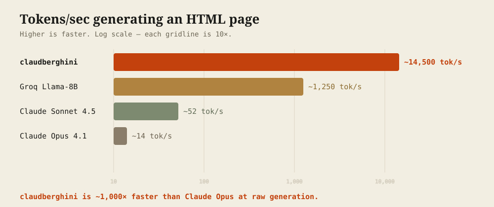

-
1.0The speed.
Taalas bakes AI models directly into custom silicon — "the model is the computer," ~1000× more efficient than GPUs. Their public demo serves Llama 3.1 8B etched into a chip. We benchmarked the same task — "write a basic HTML page" — across engines:

-
2.0The story.
We couldn't get an API key — the Taalas demo is a chat box on a website, no key on offer. So we opened the browser dev tools, watched it talk, and rebuilt the API from the network traffic:
POST /api/chat, raw-text streaming, a<|stats|>trailer carrying the token-rate telemetry. We didn't get access — we made access.Then the hard part. An 8B model is a mediocre tool-follower: it rambles, invents filenames, botches JSON, and once tried to
sudo rma system file when we just said "hi." So we built an eval harness over real Claude Code agent loops and tuned recursively against it — a hill-climbing workflow proposed prompts, scored each, and looped until ten rounds passed with no gain. -
3.0How it works.
Claude Code talks to the proxy (via deep-claude, which isolates your real Anthropic login). The proxy turns a fast-but-weak model into a coding agent:
- swaps Claude Code's 120 KB system prompt for a compact, tuned one,
- injects a
<tool_call>format and parses the model's text back intotool_useblocks, - best-of-N: re-samples until a valid tool call parses,
- grounded best-of-N: picks the answer most supported by tool output, and
- guards against destructive shell commands.
-
4.0The setup.
You'll need Claude Code, deep-claude, and Node 18+. Clone, build, and register the endpoint:
git clone https://github.com/dennisonbertram/claudberghini cd claudberghini npm install && npm run build # register the endpoint with deep-claude (one time) deep-claude endpoints add claudberghini http://localhost:3000 -
5.0The run.
One launcher does everything — it auto-starts the proxy and opens a clean Claude Code session on the silicon. Run it from the project directory you want to work in.
$ cd your-project $ claudberghini …a clean Claude Code session, on silicon @ ~14,500 tok/s… $ claudberghini -p "create an index.html with a Hello World heading" …done in ~1.5s… -
6.0The quality & the guardrails.
On the real Claude Code agent loop the core four operations — read, edit, create, grep — land 5/5. Harder multi-step and multi-file tasks reach ≈0.70 on the Taalas demo's quantized instance (1.0 on OpenRouter's). It's an 8B model: superb for focused file ops, weaker on tangled logic.
The reference.
Override anything through the environment.
| Run | |
|---|---|
| claudberghini [args…] | Clean Claude Code session on Taalas silicon. Args pass through to claude. |
| claudberghini -p "task" | One-shot print mode. |
| ./eval/real-path-eval.sh N | Score the four core tasks, N runs each. |
| ./eval/speed-benchmark.sh | Decode rate + end-to-end timing. |
| Configure (env) | |
|---|---|
| BACKEND | claudberghini (default) or openrouter. |
| TOOL_SAMPLE_ATTEMPTS | best-of-N draws for a valid tool call (default 5). |
| ANSWER_SAMPLE_ATTEMPTS | grounded answer candidates (default 3). |
| CLAUDBERGHINI_API_URL | the Taalas demo endpoint. |
| MAX_SYSTEM_BYTES | trim the prompt to the ~24 KB ceiling. |